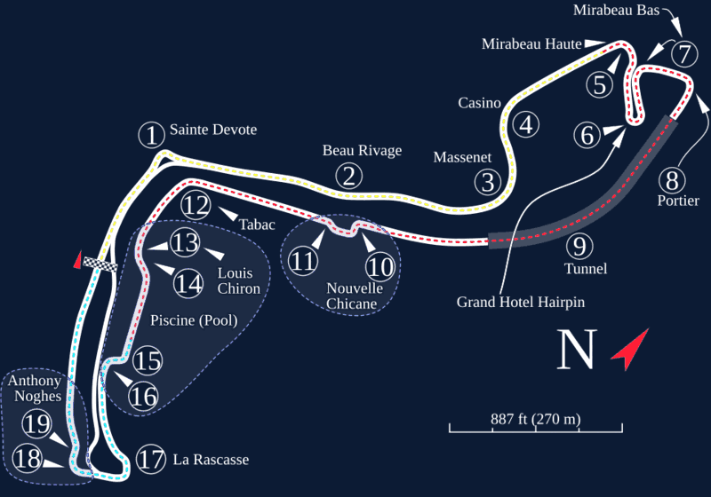

Линия трассы снята с исходного SVG на Wikimedia Commons. Цветная точка - машина выбранного класса, движется по ходу гонки со скоростью из графика ниже (ускорено); в режиме «Все классы» едут все пять. Сейчас (F1): 0 км/ч. Жёлтые точки - апексы.
О трассе
Городская трасса, самая короткая и самая медленная. Отбойники в сантиметрах, обгонять почти негде. На графике видно, что полный газ тут держат меньше всего.
| Длина круга | 3337 м |
|---|---|
| Поворотов | 19 |
| Макс. скорость | 290 км/ч |
| Рекорд круга | 1:12.909 Л. Хэмилтон, Mercedes, 2021 |
| Полный газ | - % дистанции |
| Торможение | - % дистанции |
| Круг, расчёт | - (F1) |
Класс машины
| Класс | Макс. скорость, км/ч | Вт/кг | Круг, расчёт | К F1 | Реальный ориентир (лучший круг квалификации) |
|---|
Гонки на выносливость в Монако не проводятся: для классов, кроме F1, расчёт гипотетический. Расчёт - по модели сайта (js/data.js): скорости в апексах F1 пересчитываются для каждого класса по сцеплению, затем разгон ограничен мощностью и сопротивлением воздуха, торможение - сцеплением и прижимной силой. Разница с реальным кругом в несколько процентов нормальна: модель не учитывает рельеф, ветер, ограничения BoP и расход энергии.
Телеметрия круга: F1
Пунктир - границы секторов. Сектор 1 начинается от линии старта.
Апексы: F1
Данные в CSV: апексы всех классов - apex_monaco.csv; телеметрия круга всех классов в одном файле - telemetry_monaco.csv; по классам: F1, Hypercar, LMP2, LMP3, GT3.
Карта трассы

Карта: «Monte Carlo Formula 1 track map.svg», автор Will Pittenger, Wikimedia Commons, CC BY-SA 3.0; цвета изменены под оформление сайта (светлые линии на тёмно-синем).